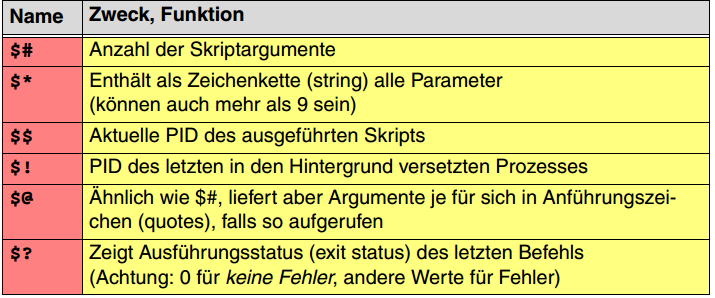

Betriebssysteme 2
Prüfung
- Keine Prüfungsaufgabe über physische Plattenspeicher!
Vorlesung 1 - MS Windows GUI
Im Buch werden deutsche Begriffe verwendet, in der Vorlesung englische (Übersetzung im Anhang)
-
2 Programmiermodelle
- Lineare Programmierung: Programmgesteuert, zb. Skripte
- Ereignisgesteuert (Event-driven): Programm reagiert auf Ereignisse (zb. Mausklick). Beispiel: Key-tool (zertifikate erzeugen). Benutzer sagt Appl., was sie tun soll (Inversion of Control)
- Beim Start wird das GUI aufgebaut
- In Endlosschleife wird Event verarbeitet
- Blockieren und auf nächstes Event warten
- Ein Spezielles Event bricht Programm ab
-
Folie 10:
hPrevInstanceist normalerweise null -
Folie 11
- Ein Thread wird zum GUI-Thread nach CreateWindow()
- sollten keine Operationen ausgeführt werden, die blockieren
- Pro Thread können mehrere Fenster erzeugt werden (Thread von winMain() muss mind. 1 Fenster erzeugen)
-
Folie 14
- Message Queues sind verkettete Listen
- Betriebssystem begrenzt grösse auf 10'000
- mit WP_PAINT wird Fenster neu gezeichnet
-
Folie 23
- GET_X_LPARAM() ist ein Makro
- Makro-Aufruf ist Platzhalter für Code, der vom Compiler eingesetzt wird
- Aufruf macht bei Funktion oder Makro kein Unterschied
-
Folie 36: Fensterhierarchie
- Controls sich auch immer Child Windows (zb. Buttons)
Vorlesung 2 - X-Window
Q&A: http://tinyurl.com/X-Win-FS16
Der X-Server zeigt das Fenster an, der Client ist die Applikation
-
Folie 119:
Window Manager ist auf Folie remote, es kann aber mit dem XDMCP-Protokoll konfiguriert werden (kann auch neben X-Server laufen -
Folie 133:
Events werden von Root nach unten gereicht bis zum Zielfenster -
Folie 135:
Fensterrahmen werden vom Window manager gezeichnet -
Folie 144: Event muss zuerst von einem Fenster in event_mask aufgenommen werden, damit Events dieses Typs behandelt werden. Andere Events gehen jeweils an das übergeordnete Fenster (ausser es ist do_not_propagate_mask gesetzt)
Vorlesung 3 - Speichersystem
Ziel: Mit Abwegung von Kosten und Leistung eine Speicherhieararchie wählen
Thema: Speicherhierarchie (Lokalitätseffekt), Hardwarestruktur (Cache Funktionsweise, grundlegende Speicherprinzipien)
-
Folie 2:
Warum nicht überall den schnellsten Speicher benutzen? Wäre zu teuer -
Folie 6:
- CPU kann von Main Memory direkt lesen
- Input/Output (-> zb. Harddisk) ist Sekundär-Speicher
- Daten im Sekundärspeicher werden zuerst in den Hauptspeicher geladen, damit sie die CPU benutzen kann
-
Folie 9:
- Schieberegister-Speicher: Serialisierung mit Hilfe eines Schieberegisters (Parallel/Seriell-Umwandung) zb. bei S-ATA verwendet
-
Folie 10: Assoziativ Speicher:
Speicherinhalte über Inhalt adressiert -
Folie 11:
- Muster identifiziert Teilinformation (nur der Teil mit der Maske aus dem Speicher ist relevant)
- Maske: Diese Bits müssen übereinstimmen
-
Für jede Zeile prüfen, ob jedes Bit in der Maske im Muster gleich ist. Wenn ja -> Trefferbit = 1
-
Die Zeilen wo Treffer erzielt sind Resultate (auch mehrere möglich)
- Gültigkeitsbit: Wenn 0, wird nie Treffer erzielt (dort ist kein Eintrag). Sonst könnte die Zahl 0 nicht abgelegt werden
-
Folie 14:
- Lokalitätseffekt: Programme nützen oft Speicher in kleinem Adressbereich
- Daher ist ein Cache nützlich, häufig genutzte Daten können dort abgelegt werden
-
Folie 15:
Zeitliche Lokalität: z.B. Mehrfache Zugriffe auf die gleiche Variable -
Folie 16:
SRAM: Statischer RAM, wird für Cache verwendet
Write-Through: Alle Inhalte im Cache sind auch im hauptspeicher
Write-Back: Inhalte vom Cache werden in den Hauptspeicher zurück geschrieben, sobald er aus Cache entfernt wird
- Folie 26 - Bsp:
- Cache-Grösse: 10Kb
- Programm-Grösse: 5 Kb
- Programm wird 20x durchlaufen
- das erste Mal kein Cache, danach 19x über den Cache
-> = 95% effizient
Vorlesung 4 - Heap
Dynamischer Speicher (aus SW-sicht): Speicher, der nur von teilen des Programms zugreifbar sind
malloc(): Speicher auf Heap reservieren
calloc(): speicher reservieren, aber initialisiert
free(): Speicher freigeben
-
Folie 41:
A: Reserviere genau so viel Speicher, wie die Applikation will. Im Heap muss bekannt sein, wie gross eine Variable ist
B: Variablen in Grössenklassen aufteilen ("Pools"). -
Folie 49:
Beinflussen im Programm: Speicher in der Reihenfolge freigeben, in der er reserviert wurde -
Folie 50
Zersötrung bei Überlauf: Wenn zb. Bereich A weiter schreibt als der reservierte Bereich, werden dessen Metadaten überschrieben -
Folie 55:
Nicht sicher, da beim "reinschreiben" in Bereich B die magische Zahl nicht unbedingt überschrieben werden muss -> Überlauf wird nicht erkannt
Vorlesung 5 - Prozessadressräume / Realer Speicher
Prozessadressräume
-
Folie 86:
- Programmcode und vorinitialisierte Variablen werden bei Programmstart in den Speicher kopiert
- Environment-Region: Kopie der Umgebungsvariablen (jeder Prozess hat eigene Umgebungsvariablen)
- Argument-Region: zb. Aufruf-Parameter
-
Folie 88:
Memory Mapped File: Ein Teil eines Files im Memory ablegen, das Programm schreibt dann in den Speicher. Nur die ÄNderungen werden dann zurück auf die Harddisk geschrieben (geht nur bei virtualisiertem Speicher)
Realer Speicher
Monoprogrammierung: Nur ein Programm gleichzeitig ausführbar
Multiprogrammierung: Speicher wird in Partitionen aufgeteilt, Programme könnnen parallel lab. zufen
-
Folie 104:
Feste Partitonen: Bei Start des Rechners Grösse festgelegt, danach nicht mehr verändert -
Folie 105:
Speichernutzung schlecht: für kleine Programme wird ein grosser Platz reserviert, evtl. hat dann ein Prozess mit mehr Speicheranforderung kein Platz mehr in den anderen Partitionen -
Folie 106:
Problem: prozess kann Queue nicht wechseln, obwohl eine Partiton frei wäre -
Folie 108:
Pro Prozess ein Schlüssel (Zahl) in ein Register geladen. Ein schlüssel wurde einer Partition zugeteilt, dann bei jedem Zugriff auf Speicherschutz überprüft
Vorlesung 6 - Unix-Shell-Skripts (1)
Feedback: http://tinyurl.com/Shell-FS16
- Bash-Login-Skripte
~/.bash_profilefür normales Login~/.bash_rcfür remote-login (ssh)
- Shell-Befehle
k1 || k2: k2 wird nur ausgeführt, falls k1 nicht erfolgreich ist(k): k wird in Subshell ausgeführt
- Variablen
$SHELList eine Umgebungsvariable, zeigt also zb. nicht, in welcher Shell ein Skript gerade ausgeführt wird!- Einlesen von Variablen:
read <variable> - Einlesen aus File:
read w1 w2 w3 < wordfile.txt, wobei die einzelnen w1, w2, w3 im file mit einem leerzeichen getrennt sind - Spezialvariablen: 
- Array:
arr=(11 23 55), lesen:${arr[0]}
Vorlesung 7 - Unix-Shell-Skripts (2)
Feedback: http://tinyurl.com/Shell-FS16
Funktionsweise $OPTIND: http://stackoverflow.com/questions/14249931/how-does-the-optind-variable-work-in-the-shell-builtin-getopts
Vorlesung 8 - Virtueller Speicher (1)
Multiprogrammierung mit realem Speicher: Einen "Offset" in ein Register schreiben und die Sprungadressen jeweils verschieben, um auf die richtige Speicher-"Partition" zuzugreifen
-
Folie 132
-
Umsetzungstabelle
Art Adresse Länge 1: Code A1: 0 L1 2: Daten A2: 100 L2 3: Stack A3: 5000 L3 -
Vorteile:
- Speicherschutzverletzung erkennen
- Prozesse sind isoliert und können nicht auf Speicher anderer Prozesse zugreifen
- Code-Injection verhindern (Code als "read-only")
- Code-Aufruf auf Stack verhindern
- Nachteile:
- Umsetzungstabelle braucht Speicher
- Verwaltungsaufwand
- Folie 141
- Jede Virtuelle Adresse wird verschoben um die Adresse, die in der Umsetzungstabelle steht
- Folie 142
- Segmentnummer ist Index in Tabelle ST
- Relativadresse wird Addiert mit Segmentstartadresse, sofern sie nicht ausserhalb des Bereichs liegt
- Fehler in Folie: statt
- Folien 146-148
- Speicher in fixe Blöcke unterteilen (= Seiten)
- Virtueller Adressraum wird ebenfalls in gleichgrosse Pages unterteilt
- In "Page Table" hat jeder Eintrag ("Page Table Entry", PTE) einen Index (Page-Nr), Gültigkeitsbit (Zugriff erlaubt oder nicht) und Read/Write-Bit (Schreibschutz)
- Gültigkeitsbit, um Speicherschutzverletzungen zu verhindern
- Fehler Folie 147: Grüne Pages rechts gehören zu Prozess B
- Folie 151
- k = 13
- Seitendeskriptoren = 8, weil 3 Bit für virtuelle Seitennr.
- Folie 155
- Minimaler Speicherbedarf:
- 1 page directory: 4 KB
- 1 page table: 4 KB
- = 8 KB
-
Vorlesung 9 - Ein- und Ausgabe
Feedback: http://tinyurl.com/EinAusgabe-FS16
DMA: Direct Memory Access
- Programmgesteurte I/O
- "Einfachster Fall"
- Alles in Software, in einem Loop wird gewartet bis ein Input kommt
- Polling: Man schaut ständig ob Input vorhanden ist
- Braucht "busy wait" -> Vergeudung von Rechenzeit
- Wird benötigt, wenn Interrupt nicht unterstützt wird
- Interrupt-gesteuerte I/O
- Hardware unterbricht
- Wenn Behandlung beendet, kehre zum unterbrochenen Programm zurück
- CPU prüft nach jeder Ausführung, ob es ein Interrupt gibt
- Vektorisierung
- Interrupt-Signale durchnummeriert
- Tabelle aus Interrupt-Nummer und Adresse der Funktion (ISR)
- ISR: Interrupt Service Routine
- Synchrone Interrupts: An Befehl gebunden, d.h hat direkt mit vorangegangenem Befehl zu tun
- Asynchrone Interrupts: Können jederzeit auftreten (z.B. durch Peripherie)
- I/O mittels DMA
- I/O an speziellen DMA-Controller deligieren
- Betriebssystem gibt Quell- und Zieladresse an
- DMA transferiert Daten ohne Hilfe der CPU
- Nach Abschluss meldet sich DMA-Controller per Interrupt bei der CPU
Vorlesung 10 - Virtueller Speicher (2)
Valid-Bit = 0 in Umsetzungstabelle, heisst:
- Seite gehört zum Prozess, aber fehlt im HS -> Laden ab Datenträger
- Auslagerungsdatei
- ausführbare Daten
-
Schutzverletzung
-
Folie 173
- Alternative:
- Swapping (Ganze Prozesse werden ausgelagert)
- Segment-Wechsel-Verfahren (Segmente können aber viel grösser sein als Pages)
- Alternative:
-
Folie 178
- Rechenbeispiel:
-
Folie 184
- Diagramm B: Annahme, dass das Programm alle Adressen gleich häufig verwendet
- Dies ist aber in der Realität nicht so (Lokalitätseffekt)
-
Folie 186
- Wenn ein Prozess plötzlich viel Page Faults hat, Platzzuteilung temporär vergrössern.
- Wenn wenig Fehler verursacht werden, Platzzuteilung wieder verkleinern
Vorlesung 11 - Dateisysteme (1)
Prüfungsrelevant: Alles was sowohl in der Vorlesung als auch im Buch ist + Übungen
- Begriff
- Teil des Betriebssystems
- Abstrahiert den Zugriff auf Datenträger
- Dateisystem auf Datenträger
- Organisation der Daten auf Datenträger
- Heute geht es um den ersten Punkt
- Teil des Betriebssystems
- Dateitypen
- Keine Suchabfragen auf Datei möglich, weil BS nichts über den Dateiinhalt weiss
- Dateityp wird durch Dateiendung festgelegt
- Unix hat "Magic Word", wodurch das BS den Dateityp auslesen kann (Dateiendung hat keine Bedeutung)
- Binärdatei kann innere Struktur haben (ist der Applikation bekannt)
- GIF z.B. hat einen vorgegebenen Anfang
- Verzeichnis-"Dateien" sind alle gleich gross (s. Folie 19)
- Verzeichnisse
- Sind System-Dateien
- Namen sind bei Linux Case-Sensitive, bei Windows nicht
- Verknüpfungen
- ".lnk" ist eine "weiche" Verknüpfung, aber eigentlich eine normale Datei
- Hard-Link:
- Zusätzlicher Name für gleiche Datei
- I.d.R nur für Dateien (um zyklische Verknüpfungen zu vermeiden, Endlosrekursion)
- Datei wird erst gelöscht, wenn es die letzte Verknüpfung ist
- Soft-Link:
- Spezielle Datei
- Löschen löscht nur die Verknüpfung
- Im Unterschied zum Hard-Link Verknüfpung in andere Dateisysteme möglich
- Grundlagen und Verwaltungsdaten
- Mehrere Prozesse können auf eine Datei zugreifen, jeder Prozess hat eigenen Schreib-/Lese-Zeiger
- Braucht Massnahmen zur Erhaltung der Konsistenz
- Zugriff über Handle (File Descriptor unter Linux)
- Handle zeigt auf Handle Table, das BS verwaltet dann den Zugriff über das Kernel object
- Jeder Prozess besitzt mehrstufige Handle Table
- Bei mehreren Zugriffen auf die gleiche Datei werden normalerweise mehrere File Objects erzeugt, da Schreib-/Lese-Zeiger im File object hinterlegt ist
- Linux: stdin, stdout und stderr sind File Descriptors 0, 1 und 2
Vorlesung 12 - Programmübersetzung
Feedback: http://tinyurl.com/Uebersetzung-FS16
- Mehrschritt-Übersetzung: Source-Files zuerst in "relocatable object files" übersetzen (*.o), die dann zusammen in ein executable übersetzt werden
- Folie 420
- Precompiling ersetzt z.B. #define Makros
- Relokation:
- Nach dem compile und assimbliereren (.o File) sind alle Sections auf Adresse 0. Beim binden werden sie mit den entsprechenden Offsets versehen
Vorlesung 13 - Dateisysteme (2)
- Im Buch ist Unix File System beschrieben, hier wird ext2 erklärt
- Folie 7
- Latenzzeit ist die Durchschnittliche Zugriffszeit (Hälfte des schlimmsten Falles, also eine ganze Umdrehung)
- Folie 10 - 11
- Für heutige Harddisk geht die Berechnung über Zylinder, Heads und Sektoren nicht mehr
- Heute wird "LBA" (Logical Block Adressing) verwendet (Controller nummeriert Sektoren von 0 durch), damit die Datendichte innen und aussen gleich bleibt (unterschiedliche Sektoren pro Spur)
- Folie 12
- Verschnitt entsteht durch Datenblöcke, die nicht komplett gefüllt sind wegen Dateiende
- Warum braucht es Blöcke?
- Unterschiedliche Geschwindigkeiten zwischen Harddisk und Bus: Daten müssen gepuffert werden
- Fehlerkorrektur möglich pro Block
- Zusammenhängede Datenblöcke
- Gibt externe Fragmentierung zwischen den Dateien
- Wird z.B. bei CD/DVD eingesetzt
- Belegungstabelle (FAT)
- Wie verkettete Liste, aber Blocknummer wird in seppareter Tabelle geführt
- Die erste Nummer muss bekannt sein (bei FAT in Filesystem-Eintrag)
- I-Node
- Jede Datei hat eine I-Node
- I-Node enthält alle Blocknummern, die zur Datei gehören
- Fragmentierung
- Fragmentierung des Dateisystems: Datenblöcke sind auseinander, der Kopf muss oft bewegt werden -> Zugriff wird langsam
- ext2
- Hat keine Zugriffsprotokolierung -> Gefahr von Inkosistenz bei unordentlichem abschalten!
- Jeder Block hat Kopie des Super-Block
- Wenn I-Node-Tabelle nicht reicht, wird verwiesen auf weitere Inode-Tabelle
- Verzeichnisse brauchen auch Inode struktur (Flag bi Filetype)
- Hard-Link verweist auf gleichen Inode wie Original-Datei
- Soft-Link ist eigene Datei, im Datenblock steht Pfad der Zieldatei
- FAT
- FAT-X: Einträge sind X Bit gross
- exFAT ist proprietär und nicht mit anderen FAT-FS kompatibel
- FAT FS kennen keine Zugriffsrechte
- Keine Protokollierung, nur boot-block wird doppelt geführt
- Clusternummer beginnt erst bei Data Region (mit 2)
- FAT verwendet Little-Endian
- Dateien / Verzeichnisse als verkettete Listen abgelegt in Tabelle
- Ursprünglich 8 Zeichen für Name und 3 für Endung
- Mit VFAT bis 255 Zeichen
- Ist Kompatibel zum alten Schema
- Ein Verzeichnis enthählt Verzeichniseinträge für beinhaltende Dateien und Unterverzeichnisse
- NTFS
- Partitionen sind "Volumes"
- "Alles ist eine Datei"
- Kleine Dateien werden direkt in File Table gespeichert
- Grosse Verzeichnisdaten werden in B-Trees gespeichert